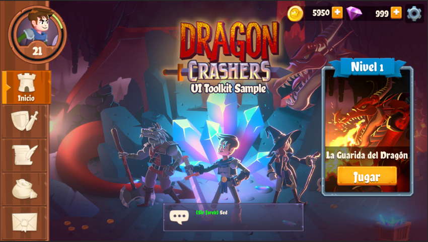
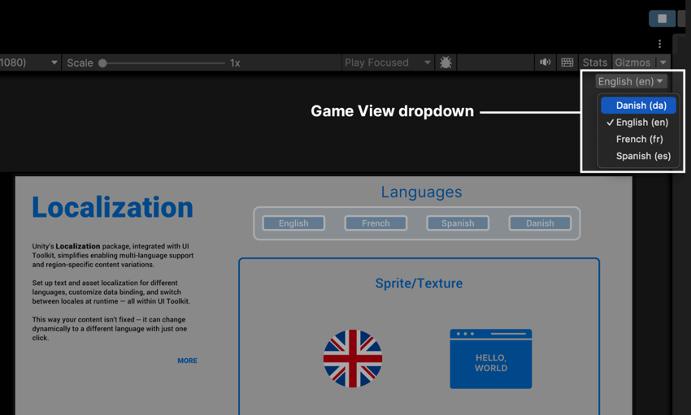
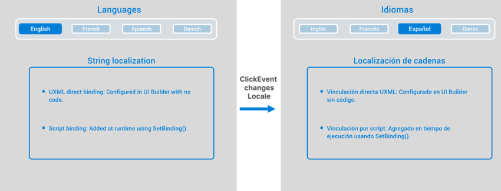
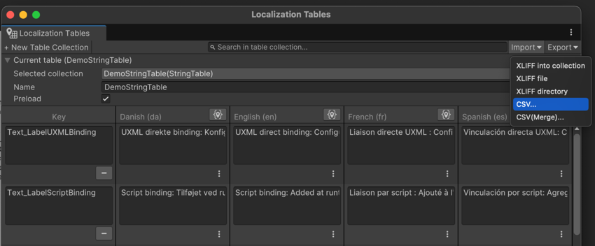
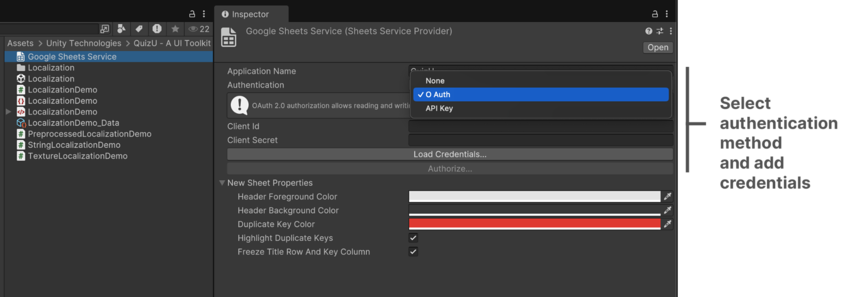
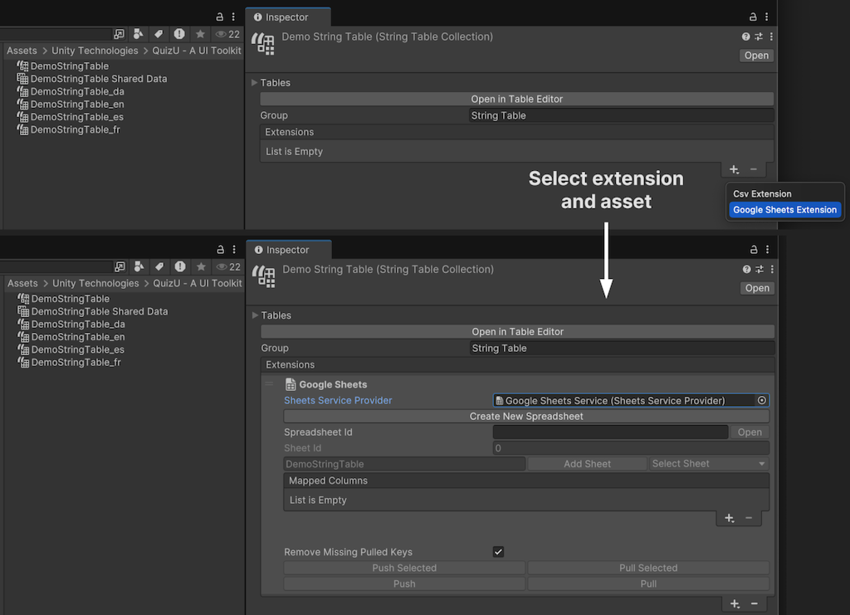
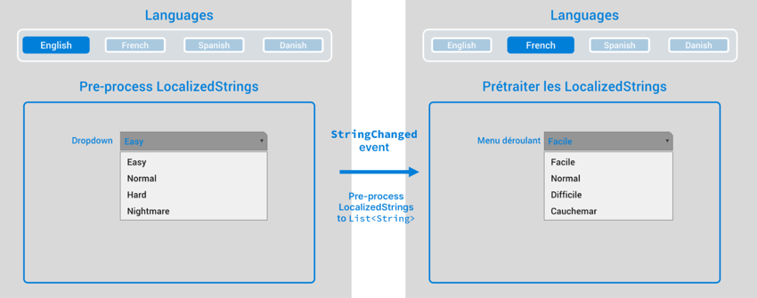
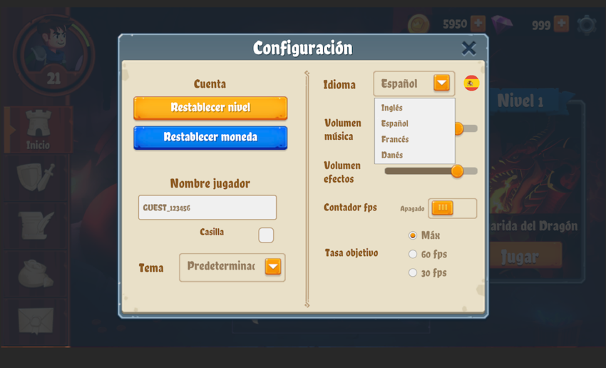

Localizing your UI can help your game connect with a global audience, making your application feel intuitive and familiar in any language.
Unity 6 simplifies this process by directly integrating the Localization package with UI Toolkit. This integration lets you provide region-specific content for your players, no matter where they might be.
Key to Unity localization is the Locale class, which represents a specific language and manages region-specific details, such as currency and number formatting.
Let’s explore a simple example of how you can set up localization in UI Toolkit. With this setup, your app can dynamically adjust its content based on a selected Locale.

An example of Spanish localization in UI Toolkit Sample - Dragon Crashers
How it works
Here are a few of its key features of the Localization package:
String Localization: The LocalizedString class lets you manage strings that automatically update when switching Locales at runtime. With Smart Strings, you can add placeholders, handle plurals, and adjust for other language-specific nuances.
Asset localization: Swap textures and other assets based on the Locale, allowing you to create region-specific content beyond simple text.
Data Binding: The Localization package integrates with UI Toolkit’s runtime data binding, linking UI elements to String and Asset Tables. Changes in data, Locale, or load state trigger automatic updates.
String and Asset Table management: String and Asset Tables store key-value pairs for translating text or other assets into Locale-specific equivalents. A centralized UI interface provides a high-level overview of all localized text and assets in your project.
Locale Switching: Switch languages in real-time without restarting the application. At runtime, select a new Locale, and the UI updates immediately to reflect the change.
Remember to take advantage of UI Toolkit’s FlexBox containers and auto-sizing elements when adapting to changes in text length and formatting. This can make your UIs more responsive when supporting different languages.
Localization setup
To start using Unity’s Localization package with UI Toolkit, follow these basic steps to set up localized content and bind it to UI elements in UI Builder.
Install the Localization package from the Package Manager.
Set Up Localization Settings: Install the Localization package from the Package Manager, then go to Project Settings > Localization to create and configure your Localization Settings asset, which will manage all localized assets.
Create Locales: Define the languages and regions your project will support using the Locale Generator. This creates assets for each Locale, identified by a unique two-letter code (e.g., “en” for English, “fr” for French, “es” for Spanish, etc.). Set a default Locale to use when the application starts.
Create String and Asset Tables: Use String Tables to store text entries for each Locale. Add entries for UI text elements like labels, buttons, and dropdown options.
In the Localization Tables window (Window > Asset Management > Localization Tables), add key-value pairs for each text element in the UI. Each key represents a specific text item (like a label or button), and each value is the translated text for that item in each Locale.
Store region-specific assets like images or GameObjectsThe fundamental object in Unity scenes, which can represent characters, props, scenery, cameras, waypoints, and more. A GameObject’s functionality is defined by the Components attached to it. More info See in Glossary in Asset Tables. For instance, you might add spritesA 2D graphic objects. If you are used to working in 3D, Sprites are essentially just standard textures but there are special techniques for combining and managing sprite textures for efficiency and convenience during development. More info See in Glossary or textures for icons representing each Locale. For each key, link assets that are specific to each Locale to reflect regional or cultural preferences.
Define a UXML interface: Use UI Builder to create a UXML file with elements such as Buttons, DropdownFields, and Labels. In the demo sceneA Scene contains the environments and menus of your game. Think of each unique Scene file as a unique level. In each Scene, you place your environments, obstacles, and decorations, essentially designing and building your game in pieces. More info See in Glossary, this UXML shows a few elements ready to be localized. For text fields, use an entry from a String Table. For non-text fields, such as textures, use an Asset Table.
Demo scene
You can find a sample implementation of Localization in the LocalizationDemo scene included in the QuizU project.
To access it, navigate at runtime to the main menu and select Demos Localization, or load the LocalizationDemo scene directly after disabling the bootloader (Quiz > Don’t Load Bootstrap Scene on Play).
Add data bindings in the UI Builder to localized strings and assets.
Bind data to UI Elements in UI Builder: This is where the power of UI Toolkit’s runtime data binding system comes into play. In UI Builder, select the element you want to localize. Open the InspectorA Unity window that displays information about the currently selected GameObject, asset or project settings, allowing you to inspect and edit the values. More info See in Glossary panel and select Add Binding in the content field (e.g., text for Labels or backgroundImage for images).
Choose LocalizedString or other localized asset as the binding type, and link to the corresponding entry in your String or Asset Table. Add more entries to the tables as you need to localize more elements.

Use the Game View Locale drop-down to preview the localization.
To test, use the Game View Locale drop-down to preview the UI in different languages, ensuring elements display correctly in each Locale.
And that’s the basic setup! In this example, the text properties of the buttons and labels can now switch to any other configured language. To localize the entire UI, make sure every piece of text has its own entry in the String Table.
The Localization package is flexible in how you organize content. Use multiple String Tables to break a larger project into more manageable sections or to categorize different entries. Then, use Asset Tables to help localize your textures and other non-text assets.
After adding localization bindings in UI Builder, your UXML file incorporates the localization directly into the UI elements. This results in a code block like this, where each localized property is tied to a specific entry in your String or Asset Table:
This snippet of UXML establishes a data binding that links the UI element’s text property to an entry in the String or Asset Tables.
Every time you update the localization tables, the linked UI elements automatically reflect the latest localized content.
Note: While UI Builder simplifies the creation of data bindings, experienced users may also edit the UXML directly for greater control over the localized content.
Use the Localization API
The Game View Locale drop-down in the Editor is helpful for testing different languages, but it won’t be available in a build of your application. To allow users to change languages in the final application, you’ll need to create your own UI for Locale switching.
Select a Locale
If you have the two-letter identifier of your Locale, you can set the active Locale in the LocalizationSettings. Then, connect this action to your buttons using the clicked manipulator on each button or the RegisterCallback<ClickEvent> method.
The LocalizationDemo script in the sample project shows one implementation:
Each button can then change the locale to its indicated locale. Now when you press the button named English, French, Spanish, or Danish, the text within the UI changes at runtime.

The buttons can change Locales.
Use SetBinding
Using the UI Builder to set up data bindings is interactive and easy. Sometimes, however, you’ll need to set up binding via a script at runtime. For example, you might create UI elements dynamically, or you might have bindings that rely on data only available during gameplay.
To set up a data binding in C#, use the SetBinding method on the visual elementA node of a visual tree that instantiates or derives from the C# VisualElement class. You can style the look, define the behaviour, and display it on screen as part of the UI. More info See in Glossary. Here’s how to bind the text property of a Label to a LocalizedString entry in the StringTable:
using UnityEngine;
using UnityEngine.Localization;
using UnityEngine.UIElements;
public class LocalizationDemo : MonoBehaviour
{
// Set in Inspector
[SerializeField] LocalizedString m_LocalizedText;
Label m_LocalizedLabel;
UIDocument m_UIDocument;
void Start()
{
m_LocalizedLabel =
m_UIDocument.rootVisualElement.Q<Label>("text__label");
m_LocalizedLabel.SetBinding("text", m_LocalizedText);
}
}
In this setup, m_LocalizedText is assigned in the Inspector to an entry in DemoStringTable. This code links the text property of m_LocalizedLabel to the specified LocalizedString, allowing it to update automatically when the Locale changes.
Listen for Locale changes
In some cases, you might need to take additional actions when the Locale changes, beyond updating localized strings. Listen for the SelectedLocaleChanged event in the LocalizationSettings API if you want to execute some logic every time the Locale is updated.
Here’s an example:
using UnityEngine;
using UnityEngine.Localization;
using UnityEngine.Localization.Settings;
public class LocalizationExample: MonoBehaviour
{
void OnEnable()
{
LocalizationSettings.SelectedLocaleChanged += OnLocaleChanged;
}
void OnDisable()
{
LocalizationSettings.SelectedLocaleChanged -= OnLocaleChanged;
}
void OnLocaleChanged(Locale newLocale)
{
// Perform actions when the Locale changes, like updating UI elements
Debug.Log($"Locale changed to: {newLocale.Identifier.Code}");
}
}
In this case, OnLocaleChanged is called each time the Locale changes, allowing you to update other elements or run custom logic. Use this event handler to adjust UI properties or styles, especially if translated text doesn’t fit well within the current layout.
Work with String Tables
Most of your localization work will involve String Tables, which handle all text-based translations for your UI and labels.
Open the Localization Tables window (Window > Asset Management > Localization Tables) and create or select a String Table Collection. From here, you can add new entries, define unique keys, and input translations for each Locale.
Import and export string data
CSV files
You can populate a String Table by importing data from a CSV (comma-separated-value) file, allowing designers to set up text externally. To edit entries in plain text format, export the existing String Table as a CSV.

Import or export CSV files.
After updating the file, import it back into Unity to automatically update entries based on their keys.
Google Sheets synchronization
To connect your project to the Google Sheets service, you need to use a Sheets Service Provider asset. This asset manages authentication and allows you to create new sheets directly within the Editor.
To create it, navigate to Assets > Create > Localization > Google Sheets Service.

Create a Google Sheets Service and authorize.
The Google Sheets Service has two authorization options: OAuth or APIKey. Use OAuth if you need to access private sheets for reading and writing. Use an API Key if you only need to read from public sheets. For full read/write access, you’ll need to request authorization from Google. For details, see the Google Sheets documentation: Authorizing Requests.
To link a String Table Collection to a Google Sheet, add a Google Sheet Extension to the collection’s Extensions list. Select the String Table asset, then click the Add (+) button next to Extensions in the Inspector. You can add multiple extensions to a single String Table Collection, allowing you to assign different sheets to each Locale if needed.
To sync a String Table to a Google Sheet, connect it to a Sheets Service Provider asset. See Sheets Service Provider for information on creating and configuring one.

Add the Google Sheets Service to the StringTable’s extensions.
Once set up, this synchronization allows designers or non-developers to make edits to your localization entries directly in Google Sheets.
Use Smart Strings
Smart Strings are a powerful alternative to using String.Format when generating dynamic strings. They enable data-driven templates that support features like pluralization, conditional formatting, lists, and other language-specific rules. These features can simplify setting up localization.
To use Smart Strings, mark a string as smart in the Localization Tables window.
Open the Localization Tables window. Then, select Smart Format from the menu options (⋮). Confirm that the {S} icon appears next to the entry.
Alternatively, enable Smart Strings in the Smart field within the Localized String Editor in the Inspector.
Enable Smart Strings in either the StringTable window or Inspector.
Set up a Smart String in your script
To manage a SmartString from a script:
Set Up the Localized String with Placeholders: A Smart String consists of literal text with placeholders in brackets, similar to String.Format but with added flexibility. In your String Table, create an entry with placeholders, like "Welcome, {0}!". Here, {0} is a placeholder for runtime data.
Use a LocalizedString and Arguments: In your script, create a LocalizedString for this entry and specify the runtime data using the Arguments property. For example, this snippet from the SmartStringDemo shows how to replace a single placeholder:
// Replaces placeholder with player name (e.g.,
// "Welcome, {0}!" => "Welcome, Player One!")
m_PlaceholderLabel = root.Q<Label>("welcome__label");
m_PlaceholderMessage.Arguments = new object[] { m_PlayerName };
m_PlaceholderLabel.SetBinding("text", m_PlaceholderMessage);
This binds the LocalizedString to the label’s text property and inserts the player’s name at runtime. The original entry of [ “Welcome, {0}!” ] might appear as "Welcome, Player One!" onscreen.
Understand placeholders
Placeholders in Smart Strings are not limited to simple {0} substitutions. They can be more complex and are designed to handle advanced scenarios. In fact, a placeholder can consist of multiple parts, including:
Selector: This determines which data to use (e.g., {player.name} selects the name property of a player object).
Formatter Name: This defines the formatter to apply (e.g., plural for pluralization).
Formatter Options: This customizes the formatter’s behavior (e.g., specifying singular and plural forms).
Format: This determines how the output is presented (e.g., converting a number to a plural word, formatting a date or time, or selecting a phrase based on input).
A placeholder can consist of several parts.
Selectors are flexible and can retrieve data dynamically at runtime. They can query properties or fields of objects at runtime. For example, using the selector {gameObject.name} can retrieve the name property of a GameObject, while a selector of {slider.value} retrieves the value property of a slider.
Formatters convert the retrieved data into the final string format. Formatters allow you to format dates, times, lists, plural forms, or even apply conditional logic.
After retrieving data, formatters transform it into the final output. Each formatter defines its own options and format rules. The sample project includes a couple formatters:
Choose Formatter: {0:choose(1|2|3):morning|afternoon|evening|anytime} selects “morning,” “afternoon,” or “evening” based on input.
Plural Formatter: {0:plural:one item| items} adjusts text for singular or plural forms.
Modify the values in the Inspector and enter Play mode to see the resulting text.
Smart Strings are an alternative to String.Format.
Smart Strings provide a number of built-in formatters that enhance localization, allowing you to adapt text based on game state or context:
Choose Formatter: Allows you to apply conditional logic based on numeric input
Plural Formatter: Automatically applies pluralization rules based on quantity
In some cases, directly binding UI elements to LocalizedString may not be convenient. For example, certain elements might need additional formatting or modification before displaying the localized text. If that’s the case, you can pre-process the LocalizedString before it appears in the UI.
GetLocalizedString
The GetLocalizedString method can help here; it converts the LocalizedString into a standard string at runtime. This allows you to apply custom formatting, such as adding prefixes or combining strings, before exposing the processed string to the UI. Here’s an example:
[SerializeField] int m_PlayerLevel = 1;
LocalizedString m_LevelMessage = new LocalizedString("My_Table", "My_ Entry");
// A property that retrieves the localized string and replaces the placeholder {0} with the player's level
[CreateProperty] public string LevelMessage =>
m_LevelMessage.GetLocalizedString(m_PlayerLevel);
In this example, the LevelMessage property replaces the {0} placeholder in the Localized String with the player’s current level. The CreateProperty attribute allows this property to be used with runtime data binding, making it easy to bind directly to UI elements.
For simple use cases, you can define properties like the above LevelMessage to handle formatting logic, eliminating the need for additional event handlers.
Use the StringChanged event
A LocalizedString’s StringChanged event is useful for this kind of pre-processing. It triggers every time the LocalizedString updates (i.e. when the Locale changes), allowing you to modify the text before rendering it.
To use it, attach a handler to the StringChanged event. Here is a code snippet that creates a new LocalizedString from the My_Table StringTable using the My_Entry entry:
LocalizedString localizedString = new LocalizedString(
"My_Table", "My_Entry");
localizedString.StringChanged += OnLocalizedStringChanged;
Note how the OnLocalizedStringChanged event handler handles the conversion to a standard string automatically. Then, you can apply custom logic to modify the text before displaying it:
void OnLocalizedStringChanged(string value)
{
// Example: Add a prefix based on certain conditions
string processedString = $"[Prefix] {value}";
// Update the UI element with the processed string
m_TextLabel.text = processedString;
}
Dynamic UI controls
Of course, pre-processing LocalizedStrings isn’t limited to basic text fields. It’s especially useful when working with complex properties or UI structures where a Smart String alone can’t handle the required logic or formatting.
For example, a DropdownField has a choices property consisting of a list of strings. Pre-processing can help localize this list of options dynamically, ensuring it reflects the active Locale.
Here, the PreprocessDemo script localizes the DropdownField choices, updating them whenever the player selects a new language. Again, the logic to rebuild the list runs in response to the StringChanged event.

Pre-process a LocalizedString using the StringChanged event.
Here’s an excerpt from the PreprocessDemo script that shows how this works:
When the StringChanged event triggers, the drop-down’s options are rebuilt, and the current selection is preserved:
void UpdateDropdownChoices(string value)
{
if (m_DropdownField == null)
return;
// Save the current selection
int selection = m_DropdownField.index;
// Remove previous choices
m_DropdownField.choices.Clear();
// Add current localized values
m_DropdownField.choices.Add(m_Choice1LocalizedString.GetLocalizedString());
m_DropdownField.choices.Add(m_Choice2LocalizedString.GetLocalizedString());
// ... Add other choices
// Restore selected index and value
m_DropdownField.index = selection;
m_DropdownField.SetValueWithoutNotify(m_DropdownField.choices[selection]);
}
Using SetValueWithoutNotify updates the drop-down’s display without triggering a ChangeEvent. This prevents recursive updates and preserves the user’s selection when the drop-down options change.
In the sample project, the DropdownField dynamically updates its choices based on LocalizedString values. Each time a new Locale is selected, the updated language propagates to the dropdown options.
Pre-processing can then be an extra technique to help you create localized, context-aware UIs. While Smart Strings handle many localization tasks like placeholders and pluralization, some extra pre-processing can offer extra flexibility and formatting that Smart Strings alone can’t handle.
Localize assets
Though strings weigh heavily in localization, you may need to localize assets in addition to text. For example, the sample project includes icons to stand in for the differently configured Locales.
The flag and “Hello, world” icons represent each Locale.
Set up asset localization
Asset localization works similarly to string localization. Just as you use String Tables for localized text, you use Asset Tables for localized assets. Both tables share a similar workflow, including adding entries and referencing them in your scriptsA piece of code that allows you to create your own Components, trigger game events, modify Component properties over time and respond to user input in any way you like. More info See in Glossary or UXML files.
Localized assets can be bound to UI elements either through the UI Builder or C# scripting. For example, you can bind a visual element’s style.backgroundImage property to a localized sprite or texture.
In the sample project:
One element has its data binding defined in UXML via the UI Builder.
Another element’s binding is set up in a C# script.
Now, when selecting a Locale at runtime, the icons update along with the text labels, providing a quick visual indicator of the active Locale.
The LocalizedTextures update with each Locale.
Asset Tables versus String Tables
The process of working with Asset Tables mirrors that of String Tables. Both allow you to define entries by Locale and retrieve them at runtime. Note these differences:
Event Handling: Asset Tables use an AssetChanged event to notify changes in localized assets instead of the StringChanged event for strings.
Binding Methods: Both string and asset bindings work with SetBinding, but the bound properties (e.g., text for strings vs. style.backgroundImage for textures) depend on the asset type.
This snippet shows how the demo example retrieves the LocalizedTexture from the Asset Table by name and then binds to the style.backgroundImage property:
Localized assets come in different forms. Here are a few that you might encounter when working with UI Toolkit:
Localized textures: Ideal for icons, backgrounds, and other decorative visuals, these can be bound directly to visual element properties, such as style.backgroundImage.
Localized sprites: These are less common but useful for custom components or sprite-based visuals.
Localized fonts: These allow for switching fonts to support specific scripts or typographic styles required by different languages.
Localized objects: These are useful for referencing complex resources, such as prefabsAn asset type that allows you to store a GameObject complete with components and properties. The prefab acts as a template from which you can create new object instances in the scene. More info See in Glossary or data-driven assets, that need to vary based on the Locale.
By leveraging these assets with Asset Tables, you can ensure that your UI dynamically adapts not only its text but also its visuals to align with the active Locale.
Localization in the Dragon Crashers sample
The UI Toolkit Sample – Dragon Crashers demo includes several localization techniques in action. In the Settings view, you can use the drop-down menu to select between one of the supported languages. When a new language is chosen, the LocalizationSettings system detects the change and updates the UI in real time.

Select a Locale from the Language drop-down menu.
Here are a few things you can check as you explore the project on your own:
SettingsScreen Locale selection: The Settings screen allows users to select a Locale via a drop-down menu. This UI listens for changes in LocalizationSettings to detect new Locale selections, updating in real-time as the drop-down changes.
Data binding techniques: The UI features a combination of localization techniques. Static properties are bound directly in UI Builder and stored in the UXML.
Meanwhile, dynamically populated fields rely on runtime scripts for data binding. The SetBinding method connects text properties to LocalizedString objects, ensuring the UI reflects the selected Locale.
Pre-formatted LocalizedStrings in ScriptableObjects: Some ScriptableObject assets contain pre-formatted LocalizedString properties. For example, in the Settings screen, the Theme and Language drop-down fields dynamically rebuild lists from localized values, translating the available choices.
Other elements like the RadioButtonGroup and custom SlideToggle also pre-process the LocalizedStrings by handling the StringChanged event.
Regardless of the localization technique – whether data binding through UXML or C# scripting – the UI responds in real-time to Locale changes.
Use the techniques in this sample project as inspiration for building localized interfaces in your own Unity projects. By combining data binding and UI Toolkit, you can create a flexible, multilingual UI that’s ready to welcome players from around the world.
Explore UI Toolkit Sample – Dragon Crashers for more examples of localization.